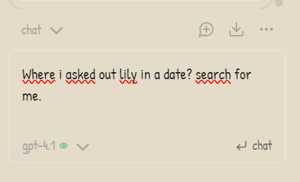

Minimal, distraction-free structure for your notes
Designed for clarity, focus, and comfort
Ready-to-use templates for daily notes, projects, and more
Works out-of-the-box with Obsidian
Customizable to fit your workflow
Built-in AI Sidebar for smart suggestions and productivity
AI Sidebar

The DigiCup AI Sidebar brings intelligent assistance right into your notes.
Get smart suggestions, summaries, and quick actions powered by AI—without leaving your Obsidian workflow.
Summarize notes instantly
Generate ideas and outlines
Ask questions about your vault
Get Started
1. Download the DigiCup vault or template from our GitHub.
2. Open it in Obsidian and explore the cozy structure.
3. Start taking notes and enjoy a focused, organized experience!